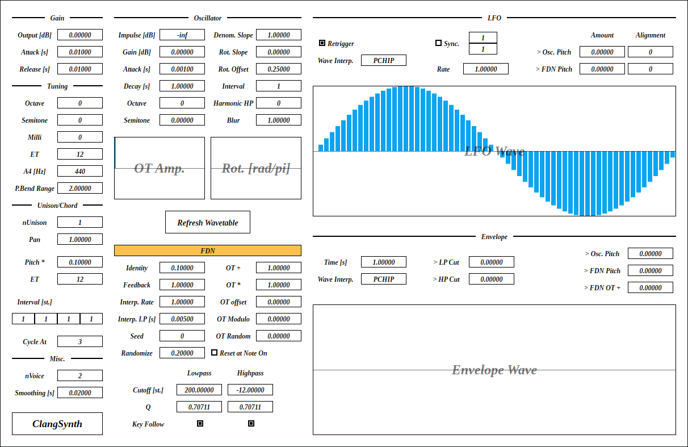
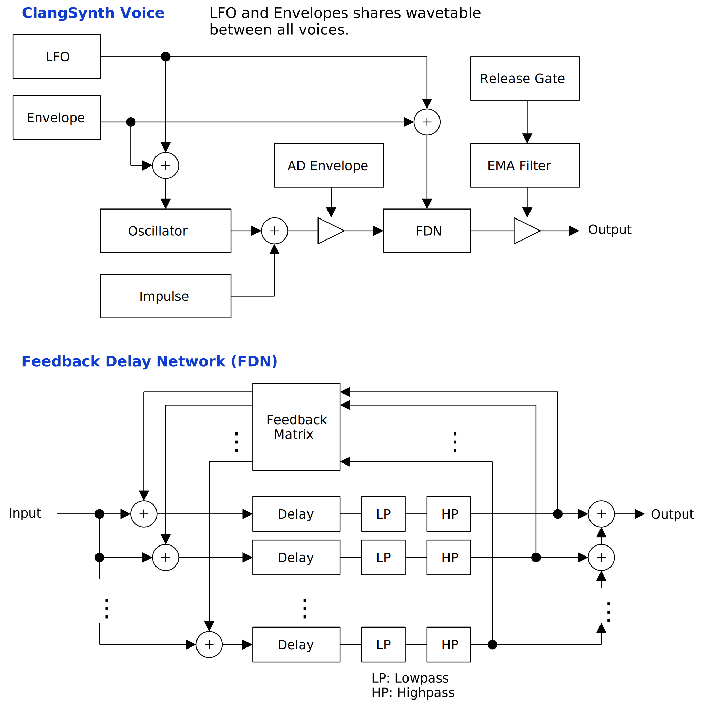
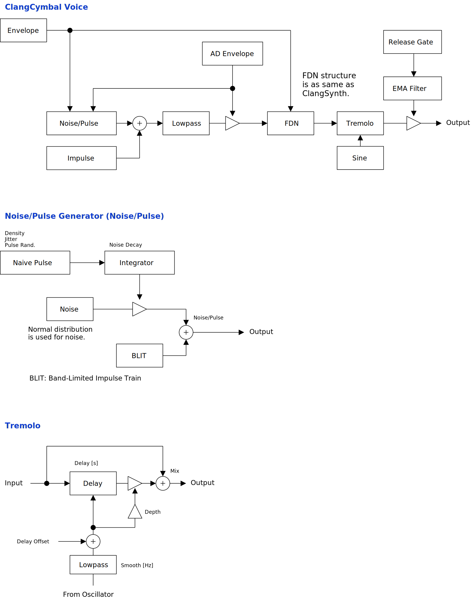

full - VST 3 をダウンロード (github.com) macOS - VST 3 をダウンロード (github.com) Update: 2023-03-30

ClangSynth は金属的なパーカッションの音が得意なシンセサイザです。金属的な質感はフィードバック・ディレイ・ネットワーク (FDN) を用いたディレイ間のクロスフィードバックによるものです。 WaveCymbal や FDNCymbal よりはシンバルに似た音が出ます。
full - VST 3 をダウンロード (github.com) macOS - VST 3 をダウンロード (github.com) ClangCymbal は ClangSynth のスピンオフです。 FDN の大きさが 64 * 64 に増えているので、よりリッチな倍音が出ます。ただし CPU 負荷も増えているのでモノフォニックです。オシレータはシンバルの合成に適したノイズとパルス列の混合に変更されています。マンホールをアスファルトの上で引きずったような音も出せます。
full - VST 3 をダウンロード (github.com) macOS - VST 3 をダウンロード (github.com) full パッケージには次のビルドが含まれています。
Linux ビルドは Ubuntu 22.04 でビルドしています。もし Ubuntu 22.04 以外のディストリビューションを使っているときは、プラグインが読み込まれないなどの不具合が起こることがあります。この場合はビルド手順に沿ってソースコードからビルドしてください。
macOS で使用するときは macOS
パッケージのダウンロードを推奨します。また Apple Developer Program
に加入していないので、インストール時に Gatekeeper
を迂回するように設定する必要があります。詳細は
インストール -> macOS
の節を参照してください。
何かあれば GitHub
のリポジトリに issue を作るか ryukau@gmail.com
までお気軽にどうぞ。
paypal.me/ryukau から開発資金を投げ銭することもできます。現在の目標はよりよい macOS サポートのための M1 mac の購入資金を作ることです。 💸💻
名前が .vst3 で終わるディレクトリを OS
ごとに決められた位置に配置してください。
/Program Files/Common Files/VST3/
に配置します。$HOME/.vst3/ に配置します。/Library/Audio/Plug-ins/VST3/ あるいは
/Users/$USERNAME/Library/Audio/Plug-ins/VST3/
に配置します。DAW によっては上記とは別に VST3 をインストールできるディレクトリを提供していることがあります。詳しくは利用している DAW のマニュアルを参照してください。
注意: プラグインによっては Uhhyou Plugins が提供するプリセットがないものがあります。
以下はプリセットのインストール手順です。
*Presets.zip を解凍。以下は OS ごとのプリセットの配置先の一覧です。
/Users/$USERNAME/Documents/VST3 Presets/Uhhyou$HOME/.vst3/presets/Uhhyou/Users/$USERNAME/Library/Audio/Presets/Uhhyouプリセットディレクトリの名前はプラグインと同じである必要があります。
Uhhyou ディレクトリが無いときは作成してください。
プラグインが DAW に認識されないときは C++ redistributable
をインストールしてみてください。インストーラは次のリンクからダウンロードできます。ファイル名は
vc_redist.x64.exe です。
Ubuntu 22.04 では次のパッケージのインストールが必要です。
sudo apt install libxcb-cursor0 libxkbcommon-x11-0もし DAW がプラグインを認識しないときは、下のリンクの
Package Requirements を参考にして VST3
に必要なパッケージがすべてインストールされているか確認してください。
REAPER の Linux 版がプラグインを認識しないときは
~/.config/REAPER/reaper-vstplugins64.ini を削除して REAPER
を再起動してみてください。
重要: full
パッケージは動作未確認です。以下のファイルは codesign
されていないので削除する必要があるかもしれません。
Contents/Resources/DocumentationContents/x86_64-linuxContents/x86_64-winmacOS
パッケージでは上記のファイルの削除は不要です。また、すべてのパッケージは
codesign コマンドの ad-hoc signing
の状態になっています。
プラグインの初回起動時に「破損している」という趣旨のメッセージが表示されることがあります。この場合は、ターミナルを開いて、解凍した
.vst3
ディレクトリに次のコマンドのどちらか、あるいは両方を適用してみてください。
/path/to/PluginName.vst3
の部分はインストールしたプラグインのパスに置き換えてください。
xattr -rd com.apple.quarantine /path/to/PluginName.vst3
xattr -rc /path/to/PluginName.vst3プラグインは署名されていない (unsigned) 、または公証されていない (un-notarized) アプリケーションとして認識されることがあります。この場合は、警告メッセージが表示された後に、システム環境設定を開いて「セキュリティとプライバシー」 → 「一般」の「このまま開く」ボタンを押してください。以下にリンクした Apple 公式のヘルプページにスクリーンショット付きで同じ手順が掲載されています。「ノータリゼーションを受けていない App や未確認の開発元の App を開きたい場合」を参照してください。
ここまでの手順を経てまだ動かないときはインストール先を
/Library/Audio/Plug-ins/VST3/ あるいは
/Users/$USERNAME/Library/Audio/Plug-ins/VST3/
のいずれか使っていなかったほうに変えてみてください。
上記の方法がすべて上手くいかなかったときは以下の手順を試してみてください。
sudo spctl --master-disable
を実行。上記の手順を実行するとシステムのセキュリティが弱くなるので注意してください。元に戻すには以下の手順を実行してください。
sudo spctl --master-enable
を実行。codesign の適用注意 この節の内容は macOS
パッケージには関連しないと考えられますが未検証です。 (GitHub の
issue)
full
パッケージを利用する場合は以下のコマンドを適用することで利用できるかもしれません。
sudo codesign --force --deep -s - /path/to/PluginName.vst3codesign の利用には Xcode
のインストールが必要となるかもしれません。
初回設定時は手動で次のファイルを作成してください。
/Users/ユーザ名/AppData/Roaming/UhhyouPlugins/style/style.json
。$XDG_CONFIG_HOME/UhhyouPlugins/style/style.json 。
$XDG_CONFIG_HOME が空のときは
$HOME/.config/UhhyouPlugins/style/style.json 。/Users/$USERNAME/Library/Preferences/UhhyouPlugins/style/style.json
。プラグインのウィンドウを開くたびに style.json
が読み込まれて更新されます。
既存の色のテーマを次のリンクに掲載しています。
style.json にコピペして使ってください。
style.json の設定例です。
{
"fontFamily": "Tinos",
"fontBold": true,
"fontItalic": true,
"foreground": "#000000",
"foregroundButtonOn": "#000000",
"foregroundInactive": "#8a8a8a",
"background": "#ffffff",
"boxBackground": "#ffffff",
"border": "#000000",
"borderCheckbox": "#000000",
"borderLabel": "#000000",
"unfocused": "#dddddd",
"highlightMain": "#0ba4f1",
"highlightAccent": "#13c136",
"highlightButton": "#fcc04f",
"highlightWarning": "#fc8080",
"overlay": "#00000088",
"overlayHighlight": "#00ff0033"
}以下はフォントオプションの一覧です。
fontFamily: フォントファミリ名。fontBold: ボールドスタイル (太字) を true
で有効、 false で無効。fontItalic: イタリックスタイル (斜体) を
true で有効、 false で無効。カスタムフォントを使用するには、プラグインディレクトリの
*.vst3/Contents/Resources/Fonts に *.ttf
ファイルを配置します。
注意: fontFamily 、
fontBold 、 fontItalic
で設定したフォントファミリ名とスタイルの組み合わせが
*.vst3/Contents/Resources/Fonts 以下のいずれかの
*.ttf ファイルに含まれていないときは VSTGUI
が指定するデフォルトフォントが使用されます。
fontFamily が長さ 0 の文字列 ""
のときはフォールバックとして "Tinos"
に設定されます。長さが 1
以上かつ、存在しないフォントファミリ名が指定されると VSTGUI
が指定するデフォルトフォントが使用されます。
ボールドあるいはイタリック以外のスタイルは VSTGUI がサポートしていないので動作確認していません。該当する例としては Noto フォントの Demi Light や、 Roboto フォントの Thin や Black などがあります。
16 進数カラーコードを使っています。
プラグインはカラーコードの 1 文字目を無視します。よって
?102938 や \n11335577
も有効なカラーコードです。
2 文字目以降のカラーコードの値に 0-9a-f
以外の文字を使わないでください。
以下は設定できる色の一覧です。設定に抜けがあるとデフォルトの色が使われます。
foreground: 文字の色。foregroundButtonOn: オンになっているボタンの文字の色。
foreground か boxBackground
のいずれかと同じ値にすることを推奨します。foregroundInactive: 非アクティブなタブの文字の色。background: 背景色。boxBackground: 矩形の UI 部品の内側の背景色。border: 縁の色。borderCheckbox: チェックボックスの縁の色。borderLabel:
パラメータセクションのラベルの左右の直線の色。unfocused:
つまみがフォーカスされていないときの色。highlightMain:
フォーカスされたときの色。スライダの値の表示にも使用されます。highlightAccent:
フォーカスされたときの色。一部のプラグインをカラフルにするために使用されます。highlightButton:
ボタンがフォーカスされたときの色。highlightWarning: 変更に注意を要する UI
がフォーカスされたときの色。overlay: オーバーレイの色。overlayHighlight:
フォーカスを示すオーバーレイの色。パラメータが割り当てられているコントロールの上で 右クリック すると、 DAW から提供されるコンテキストメニューが開きます。
つまみと数値スライダでは次の操作ができます。
青い縦棒が並んだコントロール (BarBox) ではショートカットが使えます。ショートカットは BarBox を左クリックしてフォーカスすると有効になります。フォーカス後にマウスカーソルを BarBox の領域外に移動させると、ショートカットが一時的に無効になります。ショートカットによって変更されるパラメータはカーソルの位置によって変更できます。
左下のプラグイン名をクリックすると、よく使いそうな一部のショートカットを見ることができます。利用できる全てのショートカットを次の表に掲載しています。
| 入力 | 操作 |
|---|---|
| 左ドラッグ | 値の変更 |
| Shift + 左ドラッグ | 値の変更 (スナップ) |
| Ctrl + 左ドラッグ | デフォルト値にリセット |
| Ctrl + Shift + 左ドラッグ | 値の変更 (フレーム間の補間が無効) |
| ホイールドラッグ | 直線の描画 |
| Shift + ホイールドラッグ | 1 つのバーを編集 |
| Ctrl + ホイールドラッグ | デフォルト値にリセット |
| Ctrl + Shift + ホイールドラッグ | ロックの切り替え |
| a | 符号を交互に入れ替え |
| d | すべての値をデフォルト値にリセット |
| D | 最小値・中央値・最大値の切り替え |
| e | 低域の強調 |
| E | 高域の強調 |
| f | ローパスフィルタ |
| F | ハイパスフィルタ |
| i | 値の反転 (最小値を保存) |
| I | 値の反転 (最小値を 0 に設定) |
| l | マウスカーソル下のバーのロックの切り替え |
| L | 全てのバーのロックを切り替え |
| n | 最大値を 1 に正規化 (最小値を保存) |
| N | 最大値を 1 に正規化 (最小値を 0 に設定) |
| p | ランダムに並べ替え |
| r | ランダマイズ |
| R | まばらなランダマイズ |
| s | 降順にソート |
| S | 昇順にソート |
| t | 少しだけランダマイズ (ランダムウォーク) |
| T | 少しだけランダマイズ (0 に収束) |
| z | アンドゥ |
| Z | リドゥ |
| , (Comma) | 左に回転 |
| . (Period) | 右に回転 |
| 1 | すべての値を低減 |
| 2-4 | インデックスが 2n-4n の値を低減 |
| 5-9 | インデックスが 2n-5n の値をホールド |
Shift + 左ドラッグ のスナップは一部の BarBox だけで有効になっています。特定の BarBox にスナップを追加したいという要望があれば、気軽に GitHub のリポジトリに issue を開いてください。
Shift + ホイールドラッグ による 1 つのバーを編集は、マウスホイールが押された時点でカーソルの下にあるバーだけを編集します。マウスホイールが押されている間はカーソルの左右の位置に関わらず、選択したバーのみを編集できます。
Ctrl + Shift + ホイールドラッグ によるロックの切り替えでは、マウスホイールが押された時点でカーソルの下にあるバーの反対の状態が残り全てに適用されます。例えばカーソルの下のバーがアクティブだったときはロックに切り替えます。
いくつかの BarBox の下にはスクロールバーがついています。細かい調整を行うときはスクロールバーの左右のハンドルを 左ドラッグ で動かすことで表示範囲を変更できます。スクロールバーでは次の操作が行えます。
音量の振れ幅が大きいので ClangSynth の後に必ずリミッタを挿入することを推奨します。
FDN のパラメータが短時間に大きく変わると発散することがあります。 LFO やエンベロープを使うときは注意してください。発散はパラメータが時間とともに変わると線形時不変 (linear time invariant, LTI) なシステムではなくなるために起こります。以下は発散の原因となるパラメータの一覧です。
Amount > FDN Pitch> LP Cut> HP Cut> FDN Pitch> FDN OT +Refresh Wavetable
ボタンを押すとウェーブテーブルが更新されます。更新中は CPU
負荷が上がり、ほぼ確実に音が止まるので注意してください。
図が小さいときはブラウザのショートカット Ctrl + マウスホイール や、右クリックから「画像だけを表示」などで拡大できます。
図で示されているのは大まかな信号の流れです。実装と厳密に対応しているわけではないので注意してください。


角かっこ [] で囲まれているのは単位です。以下は単位の一覧です。
出力のゲインです。
出力直前のゲインをスムーシングする秒数です。値が大きくなるとアタック時間とともに、リリース時間も長くなります。
フィルタのカットオフ周波数へと変換されるので、あくまでも目安となる値であって、正確な値ではありません。
Attack は、FDN セクションの
Reset to Note On
がチェックされていないときに、ノートオンでポップノイズが起こることを防ぐために導入されました。
FDN
セクションのローパスフィルタのカットオフ周波数を下げているときは、値を小さくしすぎるとポップノイズが目立つことがあります。シンバルなどの高い周波数成分が多い音を作るときは
0 まで値を下げても、ほとんど問題になりません。
ノートオフの後に続くリリース時間です。
フィルタのカットオフ周波数へと変換されるので、あくまでも目安となる値であって、正確な値ではありません。
全体の音の高さを変更します。
Octave: オクターブSemi: 半音Milli: 半音の 1 / 1000 。 1 / 10 セント。音律を変更します。
ET は Equal Temperament (平均律) の略です。
ET が 12 のときは 12 平均律となります。 ET を
12 よりも小さくすると無音になる範囲が増えるので注意してください。
A4 [Hz] は、音程 A4 の周波数です。
ピッチベンドの範囲です。単位は半音です。
ユニゾンにつかうボイスの数です。
パンを振る幅です。
初回のノートオンでは、右から左へ向かって、ピッチの低い音から高い音へと順番にパンが振られます。以降はノートオンごとにパンの割り当てを左に回転させます。
ユニゾンで変更されるピッチに乗算される値です。
Pitch * が 0 のとき、 Interval
の値は無効になります。
Interval のみで使われる平均律の値です。
Interval
はユニゾンで使われるボイスのピッチを、ノートオンで送られてきたピッチからどれだけずらすかを調整する値です。
Cycle At は Interval
の値を巻き戻すインデックスです。
例えば Interval が以下の値に設定されているとします。
1, 2, 3, 4各 Interval には Pitch *
の値が乗算されます。仮に Pitch * の値が 0.1
とすると以下の値へと変換されます。
0.1, 0.2, 0.3, 0.4ここで Cycle At が 1
に設定されているとすると、以下のようにインデックス 1
で巻き戻しながら繰り返します。
0.1, 0.2, 0.1, 0.2, ...さらにノートオンで MIDI ノート番号 60 のピッチが入力されると、以下のようにピッチがボイスに割り当てられます。
60, // 60
60 + 0.1, // 60.1
60 + 0.1 + 0.2, // 60.3
60 + 0.1 + 0.2 + 0.1, // 60.4
60 + 0.1 + 0.2 + 0.1 + 0.2, // 60.6
...以下は計算の手続きです。
modulo = cycleAt + 1;
accumulator = 0;
for index in [0, nUnison) {
voice[index].pitch = notePitch + pitchMultiplier * accumulator;
accumulator += interval[index % modulo];
}最大同時発音数です。
CPU 負荷を下げるときは nVoice
の値を下げると効果的です。
パラメータのスムーシング時間です。
フィルタのカットオフ周波数へと変換されるので、あくまでも目安となる値であって、正確な値ではありません。
ノートオンと同時に発音されるインパルスの振幅です。
インパルスはシンバルの音を作るときの味付けに使えます。またインパルスはベロシティに影響されないので、ばちとシンバルの衝突の強弱を演奏時に調整するときにも便利です。
TODO プリセットの紹介
オシレータ出力のゲインです。
オシレータの AD エンベロープのアタック時間とディケイ時間です。
フィルタのカットオフ周波数へと変換されるので、あくまでも目安となる値であって、正確な値ではありません。
ディケイ時間が短いときは Attack
を長くしても音はほとんど変わりません。
オクターブあるいは半音単位のオシレータのチューニングです。
オシレータのウェーブテーブルの基となるソース・スペクトラムを合成するパラメータです。
Denom. Slope : 振幅の分子の係数。Rot. Slope : 位相の傾き。Rot. Offset : 位相の切片。Interval : 書き込む間隔。Denom. Slope の値が 1 より大きいときはローパス、 1
より小さいときはハイパスのように機能します。値が 1
のときは、のこぎり波と同じ振幅特性になります。
Interval を 1 より大きくするとソース・スペクトラムが 0
となる箇所を作り出します。例えば Interval の値が 3
なら、インデックス 1, 4, 7, 10, 13, …
の値だけが書き込まれて、それ以外のインデックスでの振幅は 0 となります。
Denom. Slope の値が 1 かつ Interval の値が 2
なら、矩形波が生成されます。
以下は Denom. Slope 、 Rot. Slope 、
Rot. Offset 、 Interval
を使ったソース・スペクトラムの計算方法です。
for index in [1, numberOfHarmonics] {
if (index % interval != 0) continue;
sourceSpectrum[index].amp = 1 / (denominatorSlope * index);
sourceSpectrum[index].phase = rotationOffset + rotationSlope * index;
}ソース・スペクトラムの振幅に適用されるハイパスフィルタです。
Harmonic HP
で指定された値よりインデックスが小さい低周波成分の振幅を下げます。値が 0
のときはハイパスフィルタはかかりません。
以下は Harmonic HP の計算方法です。
for index in [0, harmonicHighpass) {
sourceSpectrum[index].amp *= index / harmonicHighpass;
}ソース・スペクトラムの振幅を通過させるローパスフィルタの係数です。
Blur
の値を下げると周波数領域で振幅の値が周囲のインデックスへと拡散するので、位相の回転を無視すると、時間領域に戻したときにはインパルスに近い音になります。
Blur が 1 のときはローパスフィルタはかかりません。
TODO 図
ソース・スペクトラムを、さらに倍音間隔で足し合わせるときの振幅と位相です。
OT Amp. : 加算する倍音の振幅。Rot. \[rad/pi\] : 加算する倍音の位相。以下は OT Amp. と Rot.
による最終的なスペクトラムの計算方法です。
targetSpectrum.fill(0);
for i in [0, nOvertone) {
for k in [0, nFrequency) {
auto index = (i + 1) * k;
if (index >= nFrequency) break;
targetSpectrum[index] += sourceSpectrum[k] * complexFromPolar(otAmp[i], otRot[i]);
}
}ボタンを押すとウェーブテーブルを更新します。
更新中は CPU 負荷が上がり、ほぼ確実に音が止まるので注意してください。
Oscillator セクションの以下のパラメータは
Refresh Wavetable ボタンを押すまで更新されません。
Denom. SlopeRot. SlopeRot. OffsetIntervalHarmonic HPBlurOT Amp.Rot. [rad/pi]点灯しているときはオシレータ出力が FDN を通過します。
オシレータの出力を確認するときには無効にすると便利です。
FDN 内のクロス・フィードバックの量を変更します。
Identity の値が 0
から離れるほど、フィードバック行列が単位行列から離れてクロス・フィードバックが増えます。クロス・フィードバックが増えると非整数次倍音が増えて金属的な質感が出ます。
FDN のフィードバック量です。
ディレイ内部の線形補間の影響で、 Feedback の値が 1
のときでも少しづつ減衰が起こります。
ディレイ時間が変更されたときのレート制限の量です。
ディレイ時間が変更されたときの補間に使われるローパスフィルタのカットオフ周波数の逆数です。
ディレイ時間の補間は、ローパスフィルタ、レート制限の順で行われます。
フィードバック行列のランダマイズに使われるシード値です。
ノートオンごとにフィードバック行列をランダマイズする割合です。
内部的には行列をランダマイズする基となる値の組を 2 つ持っています。 1
つの組は再生開始の時点で固定されます。もう 1
つの組はノートオンごとに生成されます。この 2 つの組を混ぜる割合が
Randomize です。
Randomize が 0
のときは再生開始の時点で固定される組だけを使うので、ノートオンによって倍音が変わりません。
Randomize が 1
のときはノートオンのたびにフィードバック行列が変わるので、倍音も変わります。
FDN のディレイ時間を、ノートオンで提供されるピッチの倍音として設定するパラメータです。
OT + :
倍音のインデックスが進むたびに加算される値。OT * : 倍音のインデックスが進むたびに 1
つ前の値に乗算される値。OT Offset : 倍音を高いほうに向かってシフトする量。OT Modulo : OT + と OT *
から計算される値を、巻き戻す点。OT Random :
ノートオンごとに倍音をランダマイズする量。OT + と OT Offset
を整数でない値に設定することで打楽器のような音に近づきます。
OT * と OT Modulo
はやや不自然な倍音になります。
以下は倍音の計算方法です。
// At note on.
for idnex in [0, fdnMatrixSize) {
overtoneRandomness[idx] = randomUniform(-1, 1) * otRandom;
}
// For each sample.
overtone = 1;
for idnex in [0, fdnMatrixSize) {
ot = otOffset + (1 + overtoneRandomness[index]) * overtone;
fdn.delayTime[index] = sampleRate / (ot * noteFrequency);
overtone = overtone * otMul + otAdd;
overtone = fmod(overtone, 1 + otModulo);
}チェックを入れるとノートオンのたびに FDN の状態をリセットします。
リセットによる CPU
負荷のスパイクに注意してください。音が止まるなどの問題が出るときは
nVoice の値を小さくすることで CPU 負荷を軽減できます。
ディレイの出力が通るローパスフィルタとハイパスフィルタのカットオフ周波数です。
ディレイの出力が通るローパスフィルタとハイパスフィルタの Q です。
チェックを入れるとフィルタのカットオフ周波数をノートのピッチに応じて変更します。
LFO のウェーブテーブルの波形です。
ウェーブテーブルの波形はすべてのボイスで共有されます。
チェックを入れるとノートオンされたボイスの LFO の位相をリセットします。
チェックを外すとすべてのボイスが同じ位相を使います。
1 つのボイスが 1 つの物体を表すのであれば、チェックを入れたほうがそれらしく聞こえます。ノートオンによって同じ物体を叩く、例えば 8 人が両手にばちをもって同じ中華鍋を叩いているとするなら、チェックを外してください。
LFO の波形の補間方法です。
Step: ホールド。Linear: 線形補間。PCHIP: 単調な 3 次補間。Step を選ぶと LFO をシーケンサのように使えます。
Linear は PCHIP
と似たような音になりますが、計算がすこし速いです。デフォルトの
PCHIP はサンプル間をだいたい滑らかに補間します。
チェックを入れるとテンポ同期を有効にします。また同期間隔が変わったときに再生開始時点から導かれる位相へと同期します。
チェックが外れているときは 120 BPM に同期した状態と同じになります。ただし、同期間隔が変わったときに位相を調整しなくなります。
テンポ同期が有効な時の同期間隔を表す分数の分子です。
1/1 のときに 1 小節、 4/4拍子であれば 1/4
のときに 1 拍で LFO が 1 周します。 Rate
が乗算されて周期が変わる点に注意してください。
以下は同期間隔の計算方法です。
syncInterval = (Rate) * (Tempo Upper) / (Tempo Lower);テンポ同期が有効な時の同期間隔を表す分数の分母です。
Rate が乗算されて周期が変わる点に注意してください。
同期間隔に乗算される係数です。
Tempo Upper と Tempo Lower を変えずに LFO
の同期間隔を変えたいときに使えます。
LFO によるピッチの変調量です。単位は半音です。
> Osc. Pitch の行のパラメータはオシレータ、
> FDN Pitch の行のパラメータは FDN への変調です。
LFO のよるピッチの変調量は Alignment
で指定された値の倍数だけを使います。例えば現在の変調量が 12.345 で
Alignment が 6 とすると、実際の変調量は 12 になります。
Alignment が 0 のときは Amount
の値を直接使います。
以下は変調量の計算方法です。
if (alignment == 0)
modulation = amount * lfo;
else
modulation = alignment * floor(lfo * amount / alignment + 0.5);エンベロープのウェーブテーブルの波形です。
ウェーブテーブルの波形はすべてのボイスで共有されます。
ノートオンからエンベロープの終了までにかかる時間です。
エンベロープが終了すると変調量はすべて 0 になります。
エンベロープのウェーブテーブルの補間方法です。
LFO と同じく Step 、 Linear 、
PCHIP の 3 つの補間方法から選択できます。補間方法の詳細は
LFO セクションの Wave Interp. を参照してください。
FDN のローパスフィルタのカットオフ周波数への変調量です。単位は半音です。
FDN のハイパスフィルタのカットオフ周波数への変調量です。単位は半音です。
オシレータのピッチの変調量です。単位は半音です。
FDN のピッチの変調量です。単位は半音です。
FDN セクションの OT + への変調量です。
> FDN Pitch
とは異なり、倍音に基づいたピッチの変調を行います。
ClangSynth と異なるパラメータだけをリストしています。
トレモロは振動する物体とマイクとの距離をざっくりと表現するために追加されました。変調信号はサイン波です。
入力信号とディレイを通過した信号を混ぜる比率です。
値が 0.0 のときバイパス、 1.0 のときディレイを通過した信号のみになります。
ディレイを通過した信号のゲインへの変調量です。
ディレイ時間の最大値です。
ディレイ時間への変調信号に加算される DC オフセットの量です。
Delay Offset の値は Misc.->Smoothing
に加えてさらなる平滑化が行われています。追加された平滑化によって、値を変えるといつでもフランジャーのような効果を出すことができます。
変調信号のサイン波の周波数です。
ClangSynth と比べるとピッチスライドが追加されている点が異なります。
ピッチスライドにかかる時間です。
ピッチスライドの種類です。
Sustain : 2
つ以上の鍵盤が同時に押されたときだけスライドします。Always :
常に最後に演奏されたノートのピッチからスライドします。Reset to 0 : 同時に押している鍵盤の数が 0 から 1
、あるいは 1 から 0 になるときは 0 Hz
にスライドします。それ以外の場合は他の 2
つと同じようにスライドします。押している鍵盤の数が 1 から 0
になるときのスライド時間は Gain->Release
の値が使われます。チェックを入れると 2 倍のオーバーサンプリングを有効にします。
よりシンバルらしい質感を得るためにはチェックを入れることを推奨します。ただし CPU 負荷は 2 倍になります。
チェックを外すと CPU 負荷は下がりますが、 FDN のディレイで行われる線形補間による高域の損失が大きくなるため、金属的な質感が損なわれます。外部のイコライザなどで高域を上げることで、いくらかは対処できます。
ClangCymbal ではオシレータがノイズとパルス列の混合に変更されています。
ノイズは以下の手順で生成されます。
ここで積分器と呼んでいる部品は、理論的な積分器とは別物ですが似たような動作をします。
パルス列は、ノイズ生成で使われるものとは別に、BLIT アルゴリズムで生成されます。
ノイズとパルス列を混ぜる割合です。
ローパスフィルタのカットオフ周波数です。
ローパスフィルタの Q 値です。
デフォルト値の 0.7071 を超えるとレゾナンスが目立ち始めます。
音程に応じて LP Cutoff を変える量です。
LP Cutoff を 0 、 Q を最大、
LP Key を 1
にすると、発振によってサイン波が出力されます。
ノイズとパルス列の密度です。
Density の値を Tuning->A4
と同じにした上で、 Density Key を 1.0
にすると鍵盤上の音程と一致させることができます。
音程に応じて Density を変える量です。
1 回のノイズが減衰する時間です。
Noise Decay の値が小さいときは、
Noise/Pulse の値が 0
でもパルス列に近い音になります。ノイズ生成器で使われているパルスはアンチエイリアシングが行われていないので質感の異なった音が出ます。
AD エンベロープの信号が小さくなるほど、パルスが現れる間隔を短くする効果の量です。値が 0.0 のときに無効、 1.0 のときに効果が最大になります。
力を入れずにスティックを打面に落としたときの、跳ね返りを表現するときに使えます。
Bounce 効果の曲線を変えるパラメータです。
値が大きいほど 1 回の跳ね返りにかかる時間が短くなります。
パルスが現れる間隔のランダムさです。
ノイズ生成器のパルスの振幅のランダムさです。
ClangSynth とは異なり、各フィルタのパラメータを個別に変えることができます。より柔軟な設定ができますが、 CPU 負荷も上がっています。
倍音の次数に比例してカットオフ周波数を増やす、あるいは減らす量です。
倍音の次数に比例して Q を増やす、あるいは減らす量です。
Cutoff と Cutoff Slope
から計算されたフィルタのカットオフ周波数へと、さらに加算される値です。
コントロールの左が低次、右が高次の倍音と対応します。ただし、クロスフィードバックの影響で、高次の倍音が低い周波数に、あるいは低次の倍音が高い周波数に影響を及ぼすことがあります。
Q と Q Slope から計算されたフィルタの Q
値へと、さらに加算される値です。
Cut Offset
と同様に、コントロールの左が低次、右が高次の倍音と対応します。
Oscillator->Jitter への変調量です。
Oscillator->Noise/Pulse への変調量です。
processContext が nullptr であるために
Audacity で音が正しく出力されなかったバグを修正。virtual を追加。processContext が nullptr であるために
Audacity で音が正しく出力されなかったバグを修正。virtual を追加。Seed
変更時に乱数生成器をリセットするように変更。この変更により
Seed
変更時と、フルリセット時に同じ音が出るようになった。kNotInitialized が誤って返されていた。ClangSynth のライセンスは GPLv3 です。 GPLv3 の詳細と、利用したライブラリのライセンスは次のリンクにまとめています。
リンクが切れているときは ryukau@gmail.com
にメールを送ってください。
VST is a trademark of Steinberg Media Technologies GmbH, registered in Europe and other countries.